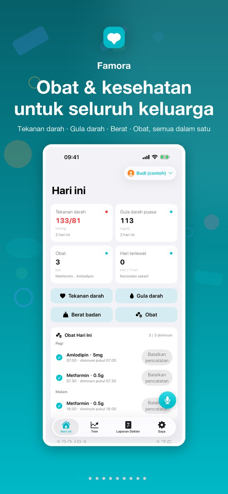
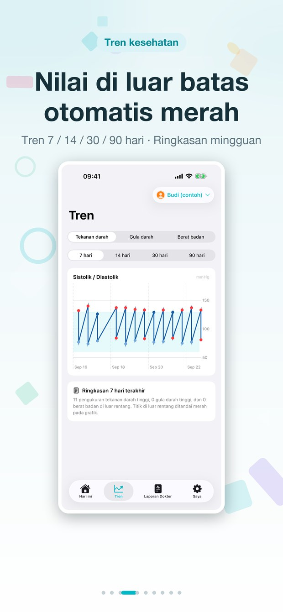
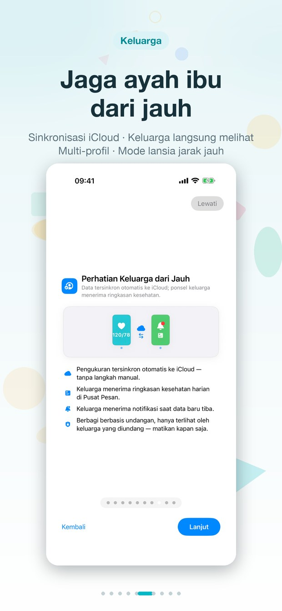
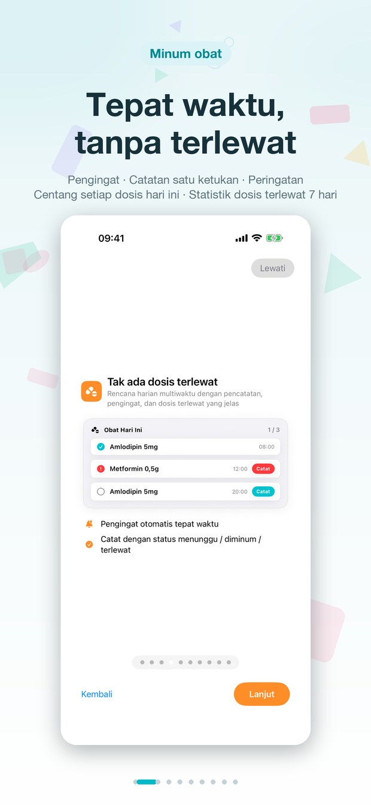
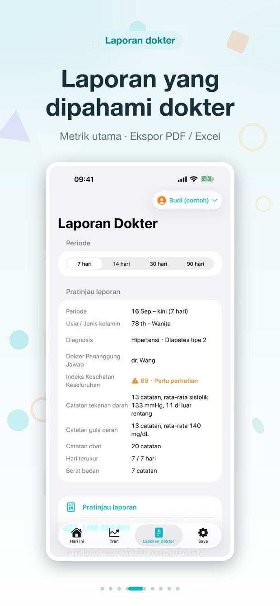
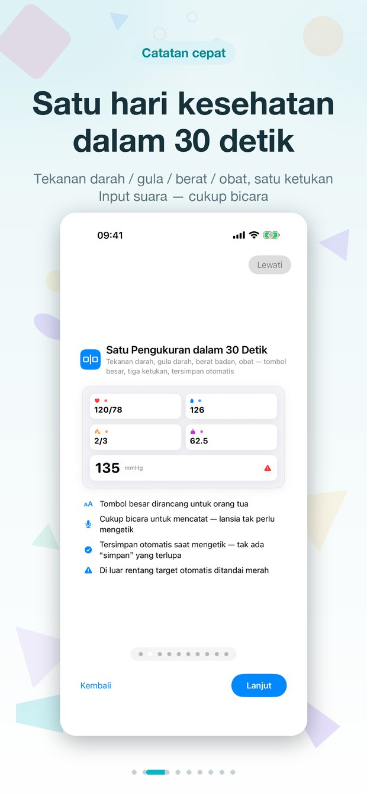

Tekanan darah · Gula darah · Berat badan · Obat — diari yang mudah dipahami lansia, dan gambaran yang jelas bagi keluarga.



Catat pengukuran, jangan lewatkan jadwal obat, dan bagikan laporan untuk dokter dalam hitungan detik.
Tekanan darah, gula darah, dan berat badan hari ini dengan status warna yang mudah dipahami — satu layar, tidak ada yang tersembunyi.
Tren 14/30/90 hari untuk setiap indikator — kenali perubahan lebih awal, sebelum menjadi masalah.

Jadwal harian dengan tanda centang dan tingkat kepatuhan; dosis yang terlewat langsung terlihat.

Laporan PDF 14/30/90 hari untuk dokter dan ekspor data mentah ke Excel — bagikan dengan dokter dan keluarga.

Catat seharian hanya dalam 30 detik: tekanan darah, gula darah, berat badan, dan obat dengan sekali sentuh — mendukung input suara.
Hasil pengukuran terunggah ke iCloud secara otomatis — keluarga langsung melihat angka terbaru begitu membuka aplikasi.
Untuk orang tua: diari yang sederhana. Untuk keluarga: panel yang mudah dipahami.
Tanpa sinkronisasi manual: pengukuran baru sampai ke keluarga dengan sendirinya.
Keluarga menerima ringkasan harian: hasil pengukuran hari ini, catatan minum obat, dan hal yang perlu diperhatikan.
Satu pengingat malam yang lembut hanya jika hari itu belum ada pengukuran — jika sudah diukur, kami tidak mengganggu.
Catat pengukuran langsung dari pergelangan tangan, dengan komplikasi wajah jam untuk pemeriksaan cepat.
Satu profil terpisah untuk setiap anggota keluarga — data, tren, dan laporan masing-masing dikelola sendiri.
Tanpa akun, tanpa server, tanpa iklan. Semua data hanya tersimpan di basis data pribadi iCloud Anda.
Semua yang perlu Anda ketahui tentang data, akun, dan pembelian.